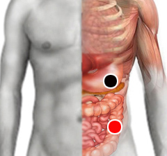

Fiebre amarilla
Par
ligamento pancreas - colon descendente

Generalidades:
Causada por el virus de la fiebre amarilla. Enfermedad originaria de Africa donde cobra la vida de más de 30 mil personas al año, también se le puede encontrar en Sudamérica y el Caribe. Causa vómito e ictericia (de ahí su nombre), Trastronos gastrointestinales.
Transmisión
Se transmite principalmente por el mosquito Aedes aegypti, pero también puede ser transmitida por otras especies de mosquitos de climas tropicales como el Haemogogus.